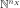
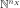
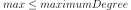
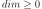

LinearEnumerateFunction¶
- class LinearEnumerateFunction(*args)¶
Linear enumerate function.
- Available constructors:
LinearEnumerateFunction(dim=1)
- Parameters
- dimint
Dimension.
Notes
Given an input random vector
 with prescribed probability
density function (PDF) , it is possible to build
up a polynomial chaos (PC) basis
. Of interest is
the definition of enumeration strategies for exploring this basis, i.e. of
suitable enumeration functions
with prescribed probability
density function (PDF) , it is possible to build
up a polynomial chaos (PC) basis
. Of interest is
the definition of enumeration strategies for exploring this basis, i.e. of
suitable enumeration functions  from
from  to
, which creates a one-to-one mapping between an integer
to
, which creates a one-to-one mapping between an integer
 and a multi-index .
and a multi-index .Let us first define the total degree of any multi-index
 in by
in by  . A natural choice to
sort the PC basis (i.e. the multi-indices )
is the lexicographical order with a constraint of increasing total degree.
Mathematically speaking, a bijective enumeration function is
defined by:
. A natural choice to
sort the PC basis (i.e. the multi-indices )
is the lexicographical order with a constraint of increasing total degree.
Mathematically speaking, a bijective enumeration function is
defined by:such that:
and
Such an enumeration strategy is illustrated in a two-dimensional case (i.e. ) in the figure below:
(Source code, png, hires.png, pdf)
This corresponds to the following enumeration of the multi-indices:
j
0
{0, 0}
1
{1, 0}
2
{0, 1}
3
{2, 0}
4
{1, 1}
5
{0, 2}
6
{3, 0}
7
{2, 1}
8
{1, 2}
9
{0, 3}
Examples
>>> import openturns as ot >>> # 4-dimensional case >>> enumerateFunction = ot.LinearEnumerateFunction(4) >>> for i in range(9): ... print(enumerateFunction(i)) [0,0,0,0] [1,0,0,0] [0,1,0,0] [0,0,1,0] [0,0,0,1] [2,0,0,0] [1,1,0,0] [1,0,1,0] [1,0,0,1]
Methods
__call__(index)Call self as a function.
getBasisSizeFromTotalDegree(maximumDegree)Get the basis size corresponding to a total degree.
Accessor to the object's name.
Return the dimension of the EnumerateFunction.
getId()Accessor to the object's id.
getMaximumDegreeCardinal(maximumDegree)Get the cardinal of indices of degree inferior or equal to a given value.
getMaximumDegreeStrataIndex(maximumDegree)Get the largest index of the strata of degree lower or equal to a given value.
getName()Accessor to the object's name.
Accessor to the object's shadowed id.
getStrataCardinal(strataIndex)Get the number of members of the basis associated to a given strata.
getStrataCumulatedCardinal(strataIndex)Get the cardinal of the cumulated strata above or equal to the given strata.
Accessor to the object's visibility state.
hasName()Test if the object is named.
Test if the object has a distinguishable name.
inverse(indices)Get the antecedent of a indices list in the EnumerateFunction.
setDimension(dimension)Set the dimension of the EnumerateFunction.
setName(name)Accessor to the object's name.
setShadowedId(id)Accessor to the object's shadowed id.
setVisibility(visible)Accessor to the object's visibility state.
- __init__(*args)¶
- getBasisSizeFromTotalDegree(maximumDegree)¶
Get the basis size corresponding to a total degree.
- Parameters
- maximumDegreeint
Degree.
- Returns
- sizeint
Number of members of the basis of degree .
Examples
>>> import openturns as ot >>> ef = ot.LinearEnumerateFunction(2) >>> size = ef.getBasisSizeFromTotalDegree(3)
- getClassName()¶
Accessor to the object’s name.
- Returns
- class_namestr
The object class name (object.__class__.__name__).
- getDimension()¶
Return the dimension of the EnumerateFunction.
- Returns
- dimint, 
Dimension of the EnumerateFunction.
- getId()¶
Accessor to the object’s id.
- Returns
- idint
Internal unique identifier.
- getMaximumDegreeCardinal(maximumDegree)¶
Get the cardinal of indices of degree inferior or equal to a given value.
- Parameters
- maximumDegreeint
Degree.
- Returns
- cardinalint
Cardinal of indices of degree .
Examples
>>> import openturns as ot >>> enumerateFunction = ot.LinearEnumerateFunction(2) >>> for i in range(6): ... indices = enumerateFunction(i) ... degree = sum(indices) ... print(str(int(degree))+' '+str(indices)) 0 [0,0] 1 [1,0] 1 [0,1] 2 [2,0] 2 [1,1] 2 [0,2] >>> print(enumerateFunction.getMaximumDegreeCardinal(2)) 6
- getMaximumDegreeStrataIndex(maximumDegree)¶
Get the largest index of the strata of degree lower or equal to a given value.
- Parameters
- maximumDegreeint
Degree.
- Returns
- indexint
Index of the last strata of degree .
Examples
>>> import openturns as ot >>> enumerateFunction = ot.LinearEnumerateFunction(2) >>> for i in [1, 2]: ... indices = enumerateFunction(i) ... strataIndex = sum(indices) + 1 ... print(str(int(strataIndex))+' '+str(indices)) 2 [1,0] 2 [0,1] >>> print(enumerateFunction.getMaximumDegreeStrataIndex(2)) 2
- getName()¶
Accessor to the object’s name.
- Returns
- namestr
The name of the object.
- getShadowedId()¶
Accessor to the object’s shadowed id.
- Returns
- idint
Internal unique identifier.
- getStrataCardinal(strataIndex)¶
Get the number of members of the basis associated to a given strata.
- Parameters
- strataIndexint
Index of the strata in the hierarchical basis. In the context of product of polynomial basis, this is the total polynom degree.
- Returns
- cardinalint
Number of members of the basis associated to the strata strataIndex. In the context of product of polynomial basis, this is the number of polynoms of the basis which total degree is strataIndex.
Examples
>>> import openturns as ot >>> enumerateFunction = ot.LinearEnumerateFunction(2) >>> for i in [3, 4, 5]: ... indices = enumerateFunction(i) ... degree = sum(indices) ... print(str(int(degree))+' '+str(indices)) 2 [2,0] 2 [1,1] 2 [0,2] >>> print(enumerateFunction.getStrataCardinal(2)) 3
- getStrataCumulatedCardinal(strataIndex)¶
Get the cardinal of the cumulated strata above or equal to the given strata.
- Parameters
- strataIndexint
Index of the strata in the hierarchical basis. In the context of product of polynomial basis, this is the total polynomial degree.
- Returns
- cardinalint
Number of members of the basis associated to the strata of index inferior or equal to strataIndex. In the context of product of polynomial basis, this is the number of polynomials of the basis which total degree is inferior or equal to strataIndex.
Examples
>>> import openturns as ot >>> enumerateFunction = ot.LinearEnumerateFunction(2) >>> for i in range(6): ... indices = enumerateFunction(i) ... degree = sum(indices) ... print(str(int(degree))+' '+str(indices)) 0 [0,0] 1 [1,0] 1 [0,1] 2 [2,0] 2 [1,1] 2 [0,2] >>> print(enumerateFunction.getStrataCumulatedCardinal(2)) 6
- getVisibility()¶
Accessor to the object’s visibility state.
- Returns
- visiblebool
Visibility flag.
- hasName()¶
Test if the object is named.
- Returns
- hasNamebool
True if the name is not empty.
- hasVisibleName()¶
Test if the object has a distinguishable name.
- Returns
- hasVisibleNamebool
True if the name is not empty and not the default one.
- inverse(indices)¶
Get the antecedent of a indices list in the EnumerateFunction.
- Parameters
- multiIndexsequence of int
List of indices.
- Returns
- antecedentint
Represents the antecedent of the multiIndex in the EnumerateFunction.
Examples
>>> import openturns as ot >>> enumerateFunction = ot.LinearEnumerateFunction(2) >>> for i in range(6): ... print(str(i)+' '+str(enumerateFunction(i))) 0 [0,0] 1 [1,0] 2 [0,1] 3 [2,0] 4 [1,1] 5 [0,2] >>> print(enumerateFunction.inverse([1,1])) 4
- setDimension(dimension)¶
Set the dimension of the EnumerateFunction.
- Parameters
- dimint,
Dimension of the EnumerateFunction.
- setName(name)¶
Accessor to the object’s name.
- Parameters
- namestr
The name of the object.
- setShadowedId(id)¶
Accessor to the object’s shadowed id.
- Parameters
- idint
Internal unique identifier.
- setVisibility(visible)¶
Accessor to the object’s visibility state.
- Parameters
- visiblebool
Visibility flag.
{kind=link}
{kind=link}